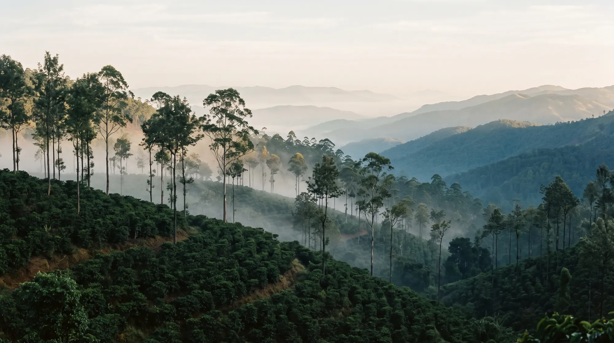

Origin
Seven beans, carried uphill.
Legend says that in the 1600s a pilgrim named Baba Budan carried seven coffee beans home from Yemen and planted them on these hills. The range now carries his name, and Chikmagalur is where India's coffee story begins.
- Where
- Baba Budan Giri, Karnataka